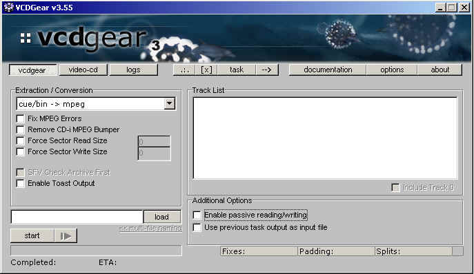
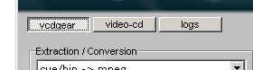
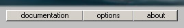

|
|
VCDGear Navigation
When you first run VCDGear, you will be presented with a screen like the following below:

Navigation around VCDGear only requires clicking the buttons.

The [vcdgear] button will show the
screen for converting and extracting video data. The [video-cd]
will show the screen for creating your own Video-CD. [logs] will display
the log of all processing
that occurs.

The first button [.:.] is
available only in v3.55+. This will bring up a dropdown menu that will
let
you run tools to help you out such as a Sample Editor (make sample video
clips). The second
button [ x ] will
immediately clear the current project that you are working on.
[task] will bring up a 3-choice menu
allowing you to open/save your current project as a task.
NOTE: You can only Save a Task once you have selected a
conversion method,
the file to load from, and the file to save to. See Batch Processing.
The third option, labelled as [ --> ] will allow you to open up the batch processor
and/or add
the current project to the batch processor as a task. The batch processor
allows you to run a
number of tasks one after the other. Tasks can be added/removed from the
batch processor.

Documentation and VCDGear options
can be accessed through the first two buttons. Information
about VCDGear is found in the [about] section.